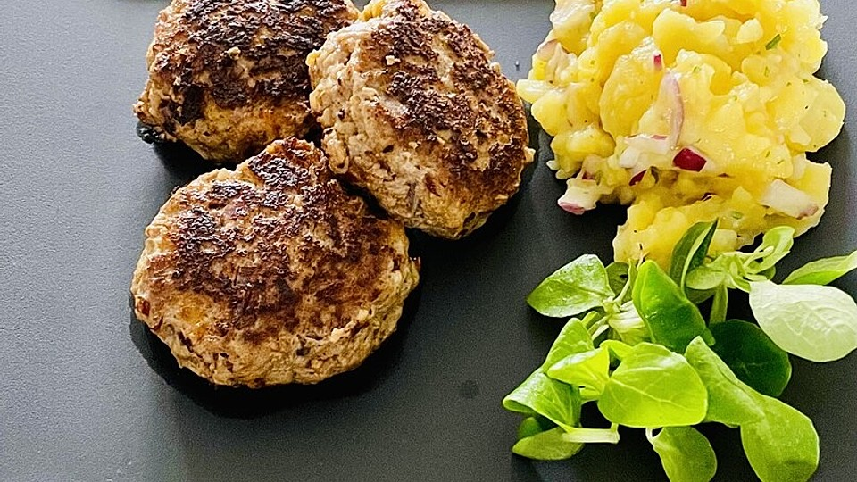

Fleischpflanzerl

Fleischpflanzerl aus Rinderhack
Zutaten:
- 500g Rinderhack
- 1 Zwiebel
- 1 M Ei
- 3 TL Chilli
- Salz & Pfeffer
Zubereitung:
- Zwiebel fein hacken.
- In einer Schüssel Rinderhack, gehackte Zwiebel, Ei, Chilli, Salz und Pfeffer vermengen.
- Aus der Mischung kleine Fleischpflanzerl formen und leicht flach drücken.
- Eine Pfanne mit etwas Öl erhitzen.
- Die Fleischpflanzerl in die Pfanne geben und von beiden Seiten goldbraun braten, bis sie durchgegart sind.
- Auf Küchenpapier abtropfen lassen und servieren.